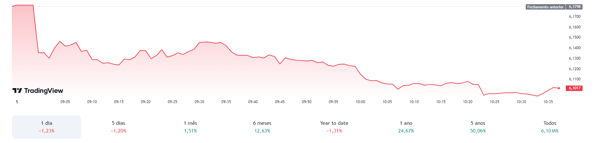
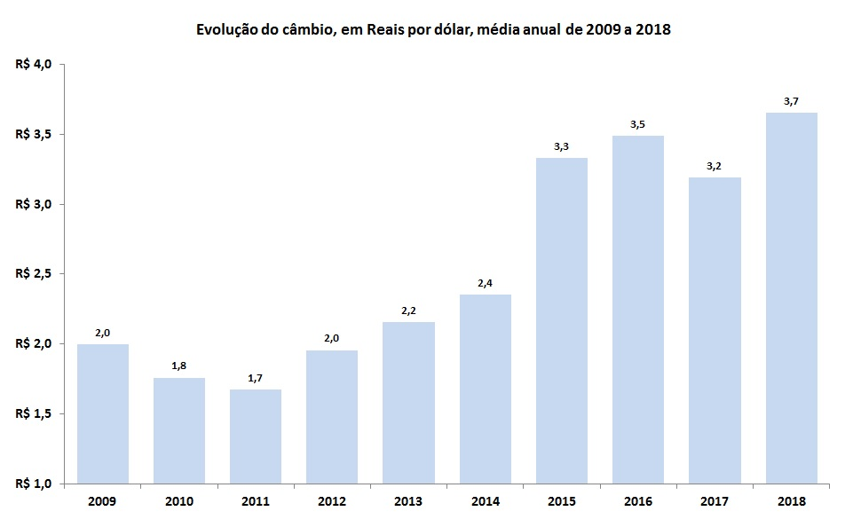

O dolar no brasil é um dado instavel, chegando ao seu pico maximo em 18 de dezembro de 2024, quando a moeda americana atingiu R$ 6,26.
Abaixo estão os graficos mais atuais do dolar no brasil.

Imagem atualizada em 06 de janeiro de 2025.
É possível perceber o aumento do dólar no momento em que o Brasil vive. Sua moeda está sendo desvalorizada rapidamente, tornando o país consideravelmente próximo de uma crise econômica.

É clara a diferença entre o dólar nos anos anteriores e o dólar atualmente. O valor atual da moeda, quando comparado ao de 2014, evidencia de forma nítida a desvalorização da moeda brasileira.